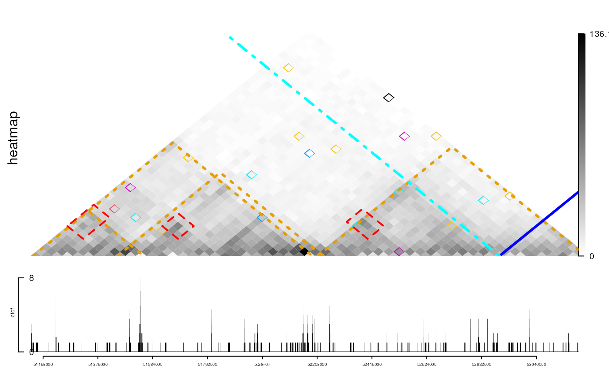

trackViewer Vignette: plot interaction data
Jianhong Ou, Lihua Julie Zhu
11 November 2022
plotInteractionData.RmdAbstract
Visualize chromatin interactions along with annotation as track layers. The interactions can be compared by back to back heatmaps. The interactions can be plot as heatmap and links.
Introduction
The chromatin interactions is involved in precise quantitative and spatiotemporal control of gene expression. The development of high-throughput experimental techniques, such as HiC-seq, HiCAR-seq, and InTAC-seq, for analyzing both the higher-order structure of chromatin and the interactions between protein and their nearby and remote regulatory elements has been developed to reveal how gene expression is controlled in genome-wide.
The interaction data will be saved in the format of paired genome
coordinates with the interaction score. The popular format are
.validPairs, .hic, and .cool. The
trackViewer package can be used to handle those data to
plot the heatmap or the interaction links.
Plot chromatin interactions data
Plot chromatin interactions tracks as heatmap.
library(trackViewer)
library(InteractionSet)
gi <- readRDS(system.file("extdata", "nij.chr6.51120000.53200000.gi.rds", package="trackViewer"))
head(gi)## GInteractions object with 6 interactions and 1 metadata column:
## seqnames1 ranges1 seqnames2 ranges2 | score
## <Rle> <IRanges> <Rle> <IRanges> | <numeric>
## [1] chr6 51120000-51160000 --- chr6 51120000-51160000 | 45.1227
## [2] chr6 51120000-51160000 --- chr6 51160000-51200000 | 35.0006
## [3] chr6 51120000-51160000 --- chr6 51200000-51240000 | 44.7322
## [4] chr6 51120000-51160000 --- chr6 51240000-51280000 | 29.3507
## [5] chr6 51120000-51160000 --- chr6 51280000-51320000 | 38.8417
## [6] chr6 51120000-51160000 --- chr6 51320000-51360000 | 31.7063
## -------
## regions: 53 ranges and 0 metadata columns
## seqinfo: 1 sequence from an unspecified genome; no seqlengths
## hicexplorer:hicConvertFormat tool can be used to convert other formats into GInteractions
## eg: hicConvertFormat -m mESC_rep.hic --inputFormat hic --outputFormat cool -o mESC_rep.mcool
## hicConvertFormat -m mESC_rep.mcool::resolutions/10000 --inputFormat cool --outputFormat ginteractions -o mESC_rep.ginteractions --resolutions 10000
## please note that metadata:score is used for plot.
range <- GRanges("chr6", IRanges(51120000, 53200000))
tr <- gi2track(gi)
ctcf <- readRDS(system.file("extdata", "ctcf.sample.rds", package="trackViewer"))
#viewTracks(trackList(ctcf, tr, heightDist = c(1, 3)),
# gr=range, autoOptimizeStyle = TRUE)
## view the interaction data back to back.
## Please make sure the data are normalized.
gi2 <- gi
set.seed(123)
gi2$score <- gi$score + rnorm(length(gi), sd = sd(gi$score))
back2back <- gi2track(gi, gi2)
## change the color
setTrackStyleParam(back2back, "breaks",
c(seq(from=0, to=50, by=10), 200))
setTrackStyleParam(back2back, "color",
c("lightblue", "yellow", "red"))
## chang the lim of y-axis (by default, [0, 1])
setTrackStyleParam(back2back, "ylim", c(0, .5))
viewTracks(trackList(ctcf, back2back, heightDist=c(1, 5)),
gr=range, autoOptimizeStyle = TRUE)
Plot chromatin interactions track as links.
setTrackStyleParam(tr, "tracktype", "link")
setTrackStyleParam(tr, "breaks",
c(seq(from=0, to=50, by=10), 200))
setTrackStyleParam(tr, "color",
c("lightblue", "yellow", "red"))
## filter the links to simulate the real data
keep <- distance(tr$dat, tr$dat2) > 5e5 & tr$dat$score>20
tr$dat <- tr$dat[keep]
tr$dat2 <- tr$dat2[keep]
viewTracks(trackList(tr), gr=range, autoOptimizeStyle = TRUE)To import interactions data from “.hic” (reference to the script of
hic-straw and the documentation).
The function importGInteractions (trackViewer
version>=1.27.6) can be used to import data from .hic
format file.
hic <- system.file("extdata", "test_chr22.hic", package = "trackViewer",
mustWork=TRUE)
if(.Platform$OS.type!="windows"){
importGInteractions(file=hic, format="hic",
ranges=GRanges("22", IRanges(50000000, 100000000)),
out = "GInteractions")
}## GInteractions object with 70 interactions and 1 metadata column:
## seqnames1 ranges1 seqnames2 ranges2 | score
## <Rle> <IRanges> <Rle> <IRanges> | <numeric>
## [1] 22 50000001-50100000 --- 22 50000001-50100000 | 26
## [2] 22 50000001-50100000 --- 22 50100001-50200000 | 2
## [3] 22 50100001-50200000 --- 22 50100001-50200000 | 22
## [4] 22 50100001-50200000 --- 22 50200001-50300000 | 7
## [5] 22 50200001-50300000 --- 22 50200001-50300000 | 31
## ... ... ... ... ... ... . ...
## [66] 22 50400001-50500000 --- 22 51200001-51300000 | 1
## [67] 22 50500001-50600000 --- 22 51200001-51300000 | 2
## [68] 22 50800001-50900000 --- 22 51200001-51300000 | 2
## [69] 22 51100001-51200000 --- 22 51200001-51300000 | 3
## [70] 22 51200001-51300000 --- 22 51200001-51300000 | 5
## -------
## regions: 13 ranges and 0 metadata columns
## seqinfo: 1 sequence from an unspecified genome; no seqlengthsAnother widely used genomic interaction data format is
.cool files and the cooler index contains
analyzed HiC data for hg19 and mm9 from many different sources. Those
files can be used as data resources for visualizations and annotations
(see ChIPpeakAnno::findEnhancers).
The importGInteractions function can also be used to import
data from .cool format (trackViewer
version>=1.27.6).
cool <- system.file("extdata", "test.mcool", package = "trackViewer",
mustWork=TRUE)
importGInteractions(file=cool, format="cool",
resolution = 2,
ranges=GRanges("chr1", IRanges(10, 28)),
out = "GInteractions")Different from most of the available tools, plotGInteractions try to plot the data with the 2D structure. The nodes indicate the region with interactions and the edges indicates the interactions. The size of the nodes are relative to the width of the region. The features could be the enhancers, promoters or genes. The enhancer and promoter are shown as points with symbol 11 and 13.
library(TxDb.Hsapiens.UCSC.hg19.knownGene)
library(InteractionSet)
gi <- readRDS(system.file("extdata", "gi.rds", package="trackViewer"))
range <- GRanges("chr2", IRanges(234500000, 235000000))
feature.gr <- suppressMessages(genes(TxDb.Hsapiens.UCSC.hg19.knownGene))
feature.gr <- subsetByOverlaps(feature.gr, regions(gi))
feature.gr$col <- sample(1:7, length(feature.gr), replace=TRUE)
feature.gr$type <- sample(c("promoter", "enhancer", "gene"),
length(feature.gr), replace=TRUE,
prob=c(0.1, 0.2, 0.7))
plotGInteractions(gi, range, feature.gr)
Session Info
R Under development (unstable) (2022-11-07 r83308) Platform: x86_64-pc-linux-gnu (64-bit) Running under: Ubuntu 22.04.1 LTS
Matrix products: default BLAS: /usr/lib/x86_64-linux-gnu/openblas-pthread/libblas.so.3 LAPACK: /usr/lib/x86_64-linux-gnu/openblas-pthread/libopenblasp-r0.3.20.so
locale: [1] LC_CTYPE=en_US.UTF-8 LC_NUMERIC=C
[3] LC_TIME=en_US.UTF-8 LC_COLLATE=en_US.UTF-8
[5] LC_MONETARY=en_US.UTF-8 LC_MESSAGES=en_US.UTF-8
[7] LC_PAPER=en_US.UTF-8 LC_NAME=C
[9] LC_ADDRESS=C LC_TELEPHONE=C
[11] LC_MEASUREMENT=en_US.UTF-8 LC_IDENTIFICATION=C
time zone: Etc/UTC tzcode source: system (glibc)
attached base packages: [1] grid stats4 stats graphics grDevices utils datasets [8] methods base
other attached packages: [1] InteractionSet_1.27.0
[2] SummarizedExperiment_1.29.1
[3] MatrixGenerics_1.11.0
[4] matrixStats_0.62.0
[5] TxDb.Hsapiens.UCSC.hg19.knownGene_3.2.2 [6]
GenomicFeatures_1.51.2
[7] AnnotationDbi_1.61.0
[8] Biobase_2.59.0
[9] trackViewer_1.35.1
[10] Rcpp_1.0.9
[11] GenomicRanges_1.51.1
[12] GenomeInfoDb_1.35.2
[13] IRanges_2.33.0
[14] S4Vectors_0.37.0
[15] BiocGenerics_0.45.0
loaded via a namespace (and not attached): [1] RColorBrewer_1.1-3
rstudioapi_0.14 jsonlite_1.8.3
[4] magrittr_2.0.3 rmarkdown_2.18 fs_1.5.2
[7] BiocIO_1.9.0 zlibbioc_1.45.0 ragg_1.2.4
[10] vctrs_0.5.0 memoise_2.0.1 Rsamtools_2.15.0
[13] RCurl_1.98-1.9 base64enc_0.1-3 htmltools_0.5.3
[16] progress_1.2.2 plotrix_3.8-2 curl_4.3.3
[19] Rhdf5lib_1.21.0 rhdf5_2.43.0 Formula_1.2-4
[22] sass_0.4.2 bslib_0.4.1 htmlwidgets_1.5.4
[25] desc_1.4.2 Gviz_1.43.0 cachem_1.0.6
[28] GenomicAlignments_1.35.0 lifecycle_1.0.3 pkgconfig_2.0.3
[31] Matrix_1.5-1 R6_2.5.1 fastmap_1.1.0
[34] GenomeInfoDbData_1.2.9 digest_0.6.30 colorspace_2.0-3
[37] rprojroot_2.0.3 textshaping_0.3.6 Hmisc_4.7-1
[40] RSQLite_2.2.18 filelock_1.0.2 fansi_1.0.3
[43] httr_1.4.4 compiler_4.3.0 bit64_4.0.5
[46] htmlTable_2.4.1 backports_1.4.1 BiocParallel_1.33.0
[49] DBI_1.1.3 highr_0.9 biomaRt_2.55.0
[52] rappdirs_0.3.3 DelayedArray_0.25.0 rjson_0.2.21
[55] tools_4.3.0 foreign_0.8-83 nnet_7.3-18
[58] glue_1.6.2 restfulr_0.0.15 rhdf5filters_1.11.0
[61] checkmate_2.1.0 cluster_2.1.4 generics_0.1.3
[64] gtable_0.3.1 BSgenome_1.67.1 ensembldb_2.23.1
[67] data.table_1.14.4 hms_1.1.2 xml2_1.3.3
[70] utf8_1.2.2 XVector_0.39.0 pillar_1.8.1
[73] stringr_1.4.1 splines_4.3.0 dplyr_1.0.10
[76] BiocFileCache_2.7.0 lattice_0.20-45 survival_3.4-0
[79] rtracklayer_1.59.0 bit_4.0.4 deldir_1.0-6
[82] biovizBase_1.47.0 tidyselect_1.2.0 Biostrings_2.67.0
[85] knitr_1.40 gridExtra_2.3 ProtGenerics_1.31.0
[88] xfun_0.34 stringi_1.7.8 lazyeval_0.2.2
[91] yaml_2.3.6 evaluate_0.18 codetools_0.2-18
[94] interp_1.1-3 tibble_3.1.8 graph_1.77.0
[97] Rgraphviz_2.43.0 BiocManager_1.30.19 cli_3.4.1
[100] rpart_4.1.19 systemfonts_1.0.4 munsell_0.5.0
[103] jquerylib_0.1.4 dichromat_2.0-0.1 grImport_0.9-5
[106] dbplyr_2.2.1 png_0.1-7 XML_3.99-0.12
[109] parallel_4.3.0 ellipsis_0.3.2 pkgdown_2.0.6
[112] ggplot2_3.4.0 assertthat_0.2.1 blob_1.2.3
[115] prettyunits_1.1.1 latticeExtra_0.6-30 jpeg_0.1-9
[118] AnnotationFilter_1.23.0 bitops_1.0-7 VariantAnnotation_1.45.0
[121] scales_1.2.1 purrr_0.3.5 crayon_1.5.2
[124] BiocStyle_2.27.0 rlang_1.0.6 KEGGREST_1.39.0